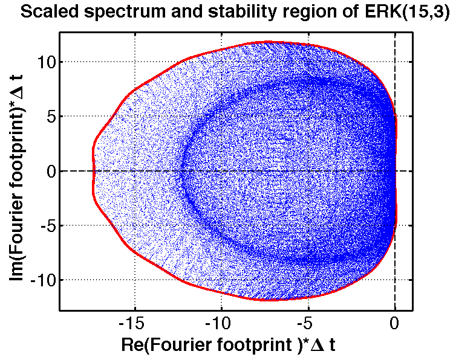
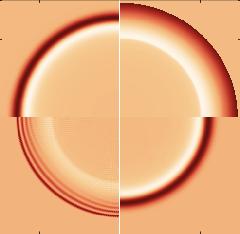

Research
The development of new strategies and methods to solve ordinary and partial differential equations and their application to wave propagation problems are central to our interests. Our group includes researchers with backgrounds in mathematics, computational science, physics, and fluid dynamics, and partners with other groups in application areas including photonics, seismology, and combustion. A few of our current and recent research thrusts are highlighted below.
Optimization of time integrators
The method of lines is a popular and effective approach to high order accurate solution of time-dependent PDEs. The time integration is typically achieved by use of multistage (e.g. Runge-Kutta) or linear multistep methods. Because of the large number of ODEs involved, this integration is expensive both in terms of computation and memory. These issues are critical when high order accurate discretizations (e.g. spectral methods, WENO method, DG method, etc.) are used for the discretization of the spatial derivatives. Our goal in this area is to develop stable methods that are computationally efficient and make efficient use of limited computer memory, by developing schemes that are optimized for
- linear stability
- strong stability preservation (or positivity preservation)
- accuracy
- minimal storage requirements
Matrix-free explicit methods can be high-order accurate, simple to implement, and inexpensive in terms of computational cost per time step. However, they are subject to stringent CFL stability limitations. Even for wave applications, if the resolution of all temporal scales is not required, or if the mesh is highly non-uniform or anisotropic, the CFL condition may be overly restrictive. Furthermore, spatially high order methods lead to systems of ODEs that become stiffer as the order of the method increases. These considerations suggest that implicit time integration schemes may be advantageous in such applications. However, for nonlinear wave applications, high order accurate methods typically lead to oscillatory solutions when used with large time steps. We are developing a new class of implicit SSP Runge-Kutta schemes that offer the potential to overcome this difficulty.
Nonlinear waves in heterogeneous materials
Solutions of systems of nonlinear first-order hyperbolic PDEs with uniform coefficients are relatively well understood; in particular, their long-term behavior is characterized by shock formation and entropy decay. Solutions of hyperbolic systems with spatially varying coefficients exhibit qualitatively different behavior, including solitary wave formation and shock suppression. We are studying these behaviors for elastic, electromagnetic, and shallow water waves in structured and random media. We are developing new understanding of these behaviors based on numerical simulations and homogenization theory.
Numerical Software Development
In order for new numerical algorithms to have impact, they must be implemented in software that is both easy to use and powerful enough to solve interesting problems. Computational science software development is an integral part of our research. For more information, see our software page.